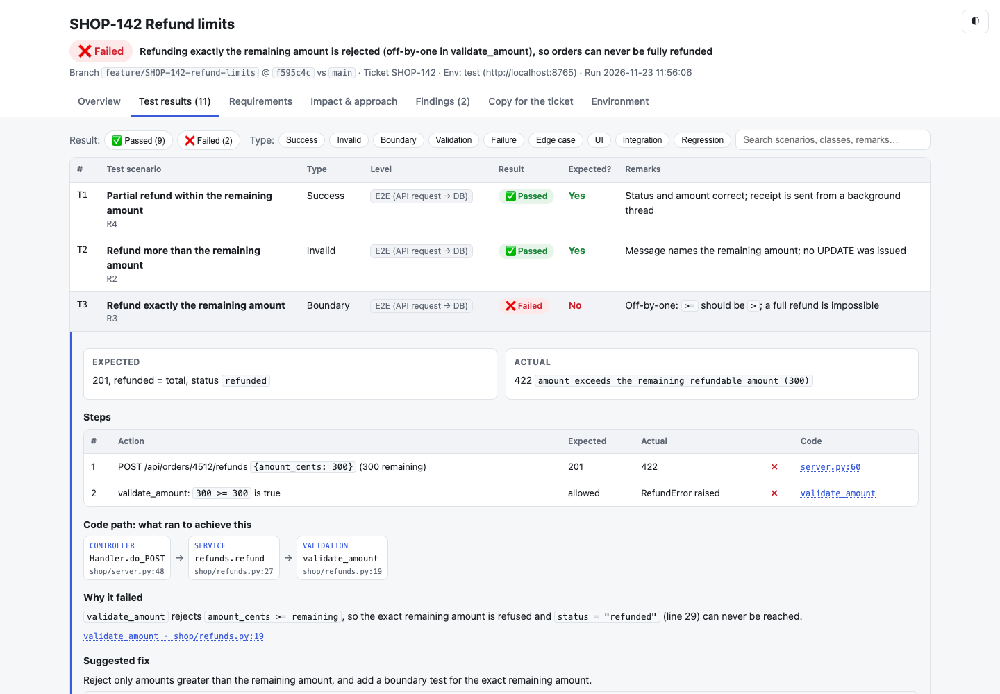
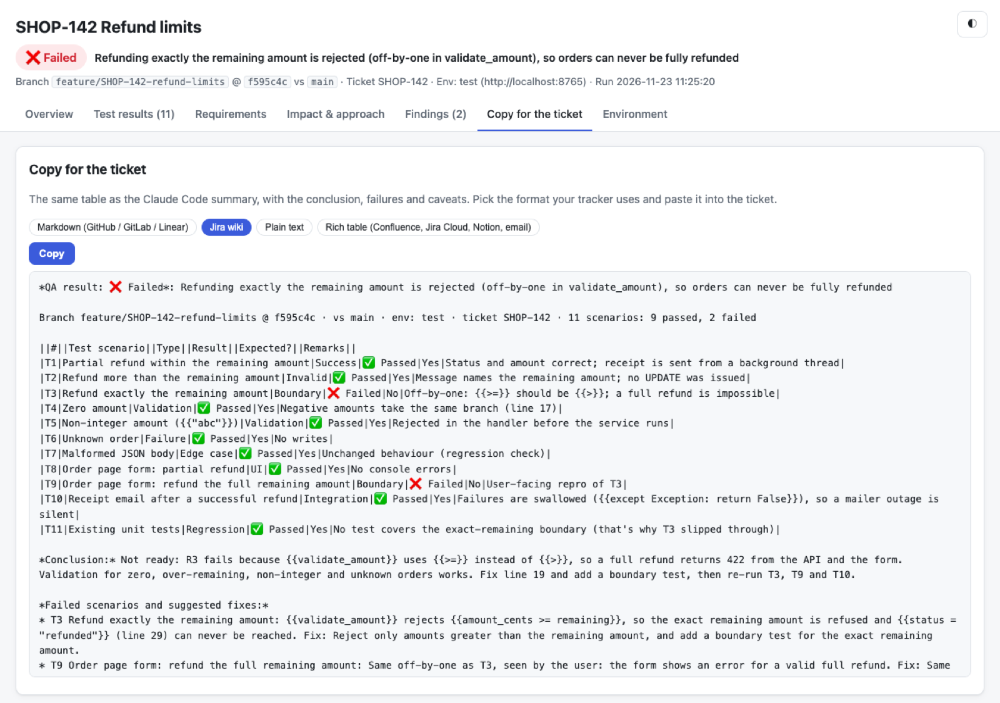
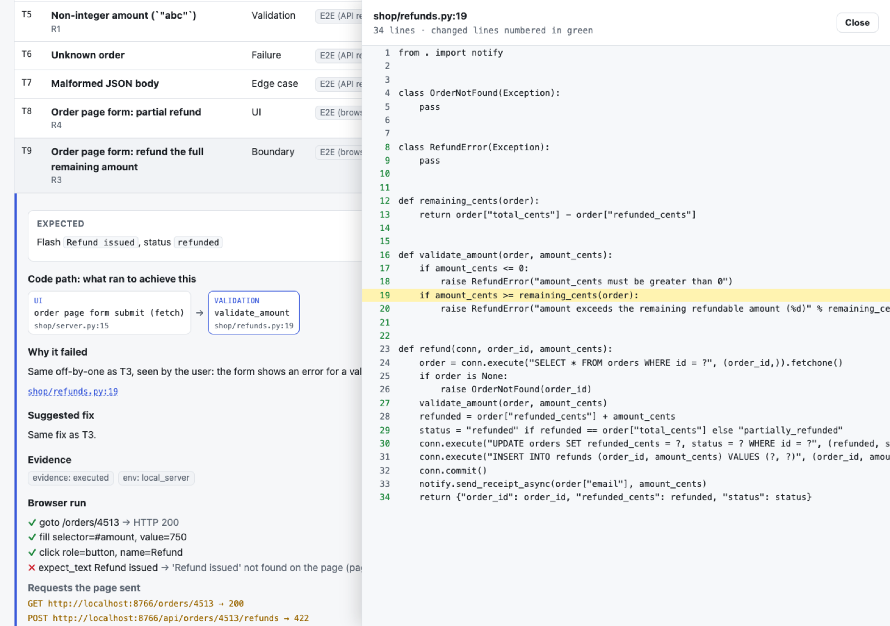

Type /branch-qa and paste the ticket. It learns what your branch changed and what that reaches, plans success, invalid, validation, boundary and edge-case scenarios from the acceptance criteria, runs them headless through your tests, real API requests and a browser, and tells you which passed, which failed, why, and how to fix them, with a results table ready to paste on the ticket.
/plugin marketplace add rewin0087/claude-code-branch-qa/plugin install branch-qa@rewin0087-branch-qa/branch-qa:branch-qa on a feature branch, with the ticket on the next lines.git clone https://github.com/rewin0087/claude-code-branch-qa.git ~/.claude/skills/branch-qa/branch-qa in any repo. Update with git -C ~/.claude/skills/branch-qa pull.
Every scenario: passed or failed, expected or not, with remarks. A failure shows the code path, the line that's wrong and the fix.
It tests the behaviour the ticket asks for, the way users and the system reach it, and shows the evidence.
Diffs the branch against its base, uncommitted work included, and maps each change to the routes, forms, jobs and callers that reach it, plus the tests that already cover it.
Acceptance criteria, checklists and Given/When/Then become requirements, and every one is covered. No ticket? It infers the expected behaviour and says so.
Browser E2E for forms, API E2E for endpoints, functional for jobs, callbacks and external clients, data checks for migrations, manual steps when a human is needed.
Invalid and missing input, validation rules, boundaries (> vs >=), not found, permissions, double submit, external failures and timeouts.
Your test runner with logs and JUnit results, HTTP checks against localhost with assertions, and a headless browser that checks the request the form sends.
The classes and methods each scenario ran through, in order, with SQL and outbound calls recorded by the Python and Ruby tracers.
Passed, Failed, Blocked or Not run, plus Expected? and a remark for every scenario, a verdict, caveats and findings.
Each failure names the file, line and value that's wrong, a concrete fix, and the test that would have caught it. Your code is never touched.
The same results table as Markdown, Jira wiki, plain text or a rich table for Confluence, Jira Cloud, Notion or email.
Background jobs run inline, callbacks and events are checked, and external APIs are stubbed or blocked and recorded.
Localhost and the test environment only. Production settings and remote databases are refused, and every command asks you first.
Results with filters, requirements coverage, the impact map, findings, screenshots, logs and traces, and the source behind every file:line.
Scripts do the exact work: the diff, the impact map, running tests and requests, the browser, the tracer, validating every file:line. Claude plans and judges.
/branch-qa with the ticket on the next lines, or #123, a URL or a file.
Diffs the branch, classifies each change and finds its entry points, callers, tests and how to exercise it.
ScriptRequirements from the ticket, then scenarios per requirement and per branch: valid, invalid, boundary, failure, edge case.
ClaudeTests, API requests and browser steps on localhost or the test env, after you approve, with the tracer recording the path.
RunnersThe results table in the chat, and an HTML report with fixes and a copy-for-the-ticket section.
YouPlugin installs use /branch-qa:branch-qa. Standalone installs use /branch-qa.
# paste the ticket on the lines after the command /branch-qa SHOP-142 Refund limits - Refund amount must be greater than 0 - A refund cannot exceed the remaining amount (422 with a clear message) - Refunding exactly the remaining amount sets the status to `refunded` # or point at it /branch-qa #128 /branch-qa https://github.com/acme/shop/issues/128 # test against the app you already have running /branch-qa --url http://localhost:3000 <ticket> # compare with develop, QA only one folder /branch-qa --base develop --path app/billing <ticket> # plan and assess by reading only /branch-qa --static <ticket>
| # | Test scenario | Type | Result | Expected? | Remarks |
|---|---|---|---|---|---|
| T1 | Partial refund within the remaining amount | Success | ✅ Passed | Yes | Status and amount correct; receipt sent from a background thread |
| T2 | Refund more than the remaining amount | Invalid | ✅ Passed | Yes | Message names the remaining amount; no UPDATE was issued |
| T3 | Refund exactly the remaining amount | Boundary | ❌ Failed | No | Off-by-one: >= should be >; a full refund is impossible |
| T9 | Order page form: refund the full remaining amount | Boundary | ❌ Failed | No | User-facing repro of T3: the form shows an error |


Claude Code has no built-in /qa. Community /qa skills, such as gstack's, explore a running app and fix what they find. /branch-qa proves a branch meets its ticket.
gstack /qa | /branch-qa | |
|---|---|---|
| Starts from | A target: a URL, API route, CLI, job or webhook | The ticket plus the branch diff |
| "Correct" means | Bugs found by exploring the app | The ticket's acceptance criteria, with coverage per requirement |
| Changes your code | Yes: a fix and a commit per bug | No: suggested fixes with file:line |
| Pin-pointing | Repro plus a fix | The code path per scenario, with SQL and blocked outbound calls |
| Output | A markdown report, screenshots, a health score | Chat table, HTML report, copy-for-the-ticket |
| For | A developer cleaning up the app | QA and reviewers who need evidence on the ticket |
Only after you approve each command. It runs your test runner in the test environment, sends HTTP requests to the app on localhost and drives a headless browser against localhost. With --static it runs nothing and marks every scenario as not run.
The ticket's acceptance criteria. Paste the ticket on the lines after /branch-qa, or pass #123, a ticket URL or a file. Without a ticket it infers the expected behaviour from the code and commits, and says so in the caveats.
No. It never edits your code. Each failed scenario gets the exact file and line, the value that is wrong, a suggested fix and the test that would have caught it. Throwaway tests live in the git-ignored .branch-qa/ folder.
Any stack with a test runner: RSpec, Minitest, pytest, Django, Jest, Vitest, Go, PHPUnit and others. API checks work for any HTTP app on localhost. Browser checks use your Playwright, Cypress or Capybara, or Python Playwright. The runtime tracers that record the code path cover Python and Ruby/Rails.
No. The HTTP and browser runners only allow localhost, the test runner refuses production environment variables and non-local database URLs, and outbound network is blocked under the tracer.
Other /qa skills, such as gstack's, explore a running app and fix and commit what they find. /branch-qa checks the branch against its ticket, reports evidence per acceptance criterion with the code path each scenario ran through, and leaves the code to you. It's named /branch-qa so both can be installed.
The report's Copy for the ticket section has the results table, conclusion, failures and caveats as Markdown, Jira wiki, plain text or a rich table for Confluence, Jira Cloud, Notion or email.
/branch-qa:branch-qa?Claude Code namespaces plugin commands as plugin:skill. To type plain /branch-qa, install it as a standalone skill by cloning it into ~/.claude/skills/branch-qa.